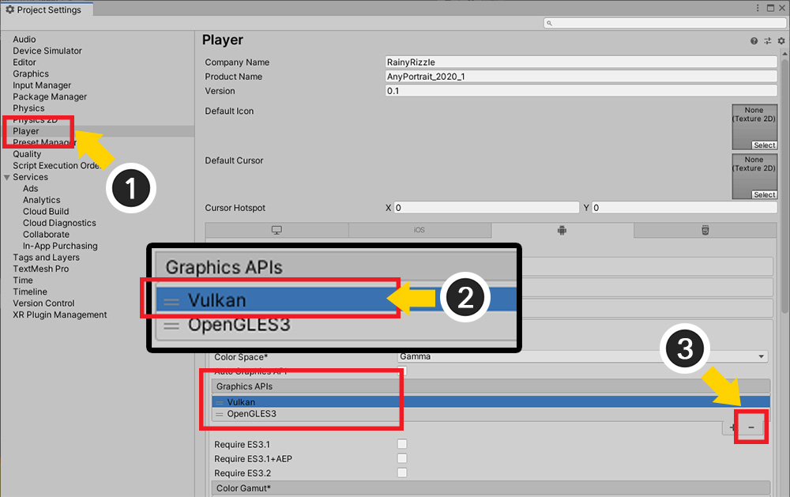
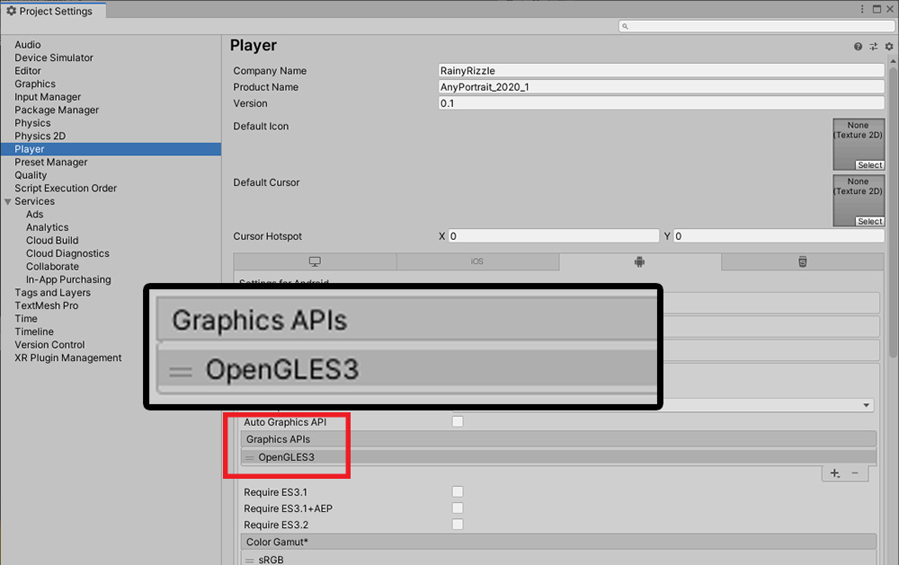

AnyPortrait > 메뉴얼 > Vulkan 빌드시 성능 저하 문제
Vulkan 빌드시 성능 저하 문제
이 페이지에서는 그래픽스 API 중 하나인 Vulkan을 이용해서 안드로이드 플랫폼으로 빌드를 했을 경우, 일부 기기에서 성능이 크게 떨어지는 이슈에 대해서 다룹니다.
이 이슈는 사용자로부터 제보를 받고 저희가 테스트를 진행한 결과에 따른 것이며, Unity나 안드로이드 업데이트, 기기에 따라서 차이가 있을 수 있습니다.
저희는 안드로이드 기기인 "Galaxy S8"에서 FPS가 절반 정도로 줄어들 정도로 성능이 좋지 않다는 사용자의 제보를 받았습니다.
실제로 해당 기기에서 테스트를 했으며, 저희는 이 문제가 Vulkan에 의한 것임을 확인하였습니다.
기본 API인 OpenGLES와 Vulkan을 사용하여 각각 빌드했을 때의 성능 차이는 다음과 같았습니다.

먼저, AnyPortrait 데모 씬을 Galaxy S8에서 실행하고 프로파일러를 이용하여 성능을 확인한 결과입니다.
스크립트와 렌더링에 대해서는 60 FPS를 상회하는 결과를 볼 수 있습니다.
하지만 VSync가 이상하게 동작하여 Vulkan의 경우에 성능이 크게 저하되는 것을 볼 수 있습니다.
AnyPortrait는 기본적인 Surface Shader와 Mesh Renderer를 이용하기 때문에, Unity의 기본 요소들을 렌더링하는 것과 큰 차이가 없습니다.
따라서 저희 팀은 Transparent 재질의 메시들을 배치한 단순한 씬으로도 테스트를 했습니다.

위 테스트 결과에서 볼 수 있듯이, Vulkan을 이용할 경우 VSync에 의한 성능 저하 문제는 AnyPortrait의 사용 여부에 관계없이 공통적으로 발생합니다.
저희는 이 문제가 기기에 따라서 발생하지 않을 수도 있음을 확인하였습니다.
이 문제를 해결하기 위해서는 현재로는 Vulkan을 사용하지 않도록 설정하는 방법 밖에는 없습니다.

(1) Project Settings > Player를 선택합니다.
(2) Vulkan을 선택하고 (3) 삭제합니다.

이제 OpenGLES로만 렌더링이 되도록 설정되었습니다.